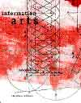

| history |
| home page |
|  |
| Mitchell, How to Do Things with Pictures William J. . Please see the book for more details about the artists, organizations, and texts listed in these links and for extended analysis of the relationship of art and research. Feel free to use these resources but please attribute source. Mitchell, How to Do Things with Pictures William J. |
|